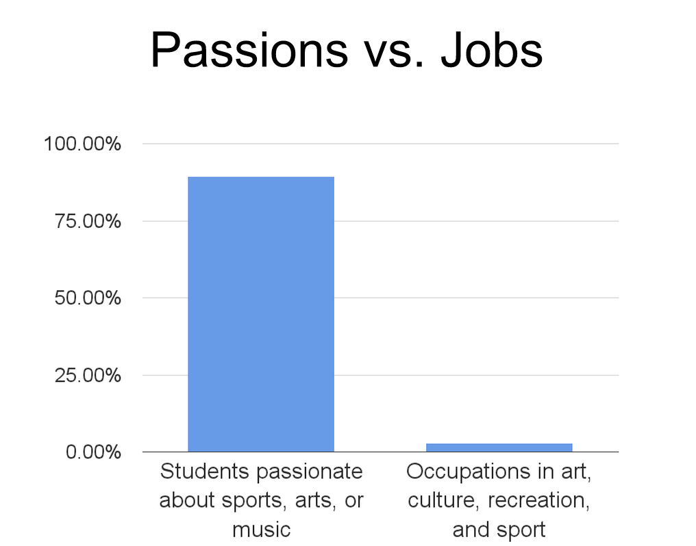

During my last year of high school, I had to chose what career path I wanted.
Photography directly came to my mind. Taking photos makes me feel good. When the camera is out, the stress and the problems are gone.
I thought that would be the dream career for me.
When digging about the subject, problems came up.
If the best carrier advice you have ever heard was to follow your passion, I have a question for you. What would you do if you didn't have one?
For those passionate about something, you have to keep in mind the following issues.
Your passions change.
We all have desires. We want to have this new car, this new phone.
These desires keep changing, one day, we want something, and the other, we don't. Similarly, our passions change. Look back ten years from now. Were your interests the same? Would you be happy today studying this subject or having a job related to it? Not necessarily.
In some cases, the passion for something can last a lifetime.
However, it is still not a valid reason to make a living out of it.
Working for your passion makes it a necessity.
What is the problem with having to work if you like the work?
"Follow your passion, and you'll never work a single day in your life." Some motivational Youtube video.
You have to be careful when adopting this mindset.
The issue is that when you have to pay the bills. The way you approach your passion changes. "I love to go out and take photos" becomes " I HAVE to go out and take photos."
The process will not be as enjoyable. Day after day, following your passion will come closer to just working on a random job.
There isn't enough jobs.

This document speaks for itself. There is only 5% of jobs that involve art, culture, passion, etc. However, more than 90% of students are passionate about those subjects. According to this study, everyone can't successfully follow his passion.
Things you could do instead.
Giving career advice is not an easy task. Everyone has different interests and skills.
Answering the following questions may help you find a career that suits your interests.
What things do you value in a job? Remote working, days off, time to work on your passions, etc.
What are your skills, and what is your mindset? When you are good at something, the chances are that you like the process. You enjoy doing it. You may not be passionate about it, but you like it enough.
What activities you did as a child and keep doing now?
When focusing only on your passion, you adopt a narrow vision. In reality, a lot of jobs suit you.
What about me?
I like photography, but I believe that it wouldn't be fulfilling in the long run. I don't know how it could benefit the world.
Furthermore, since I am a kid, I'm interested in technology. I'm not passionate about coding, but I like it. That's why I chose to code instead of taking photos. I know that a job in computer science allows remote working and enough free time to go out and take pictures.